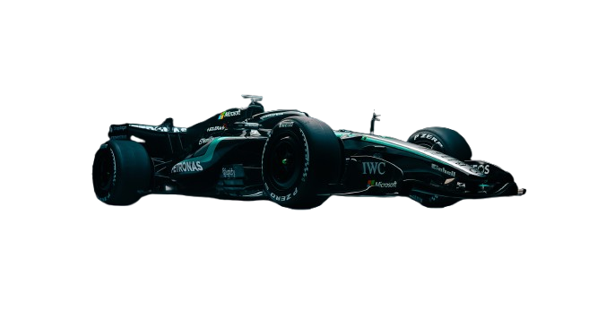
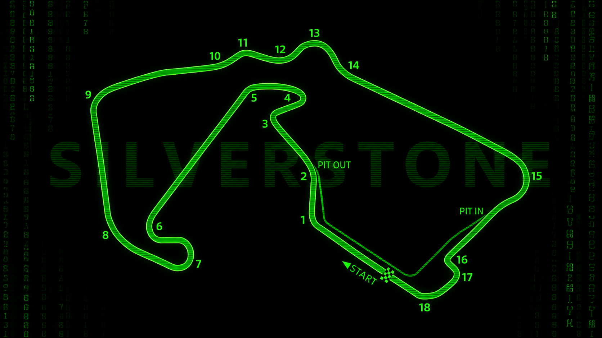
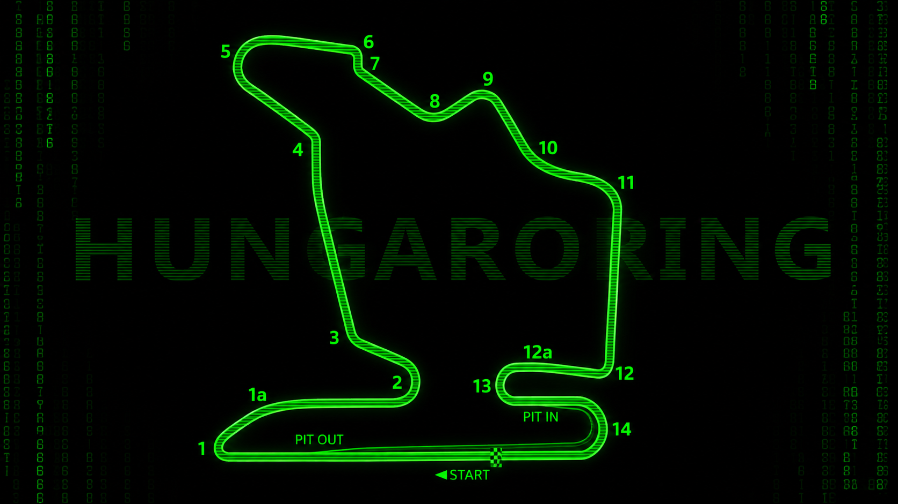
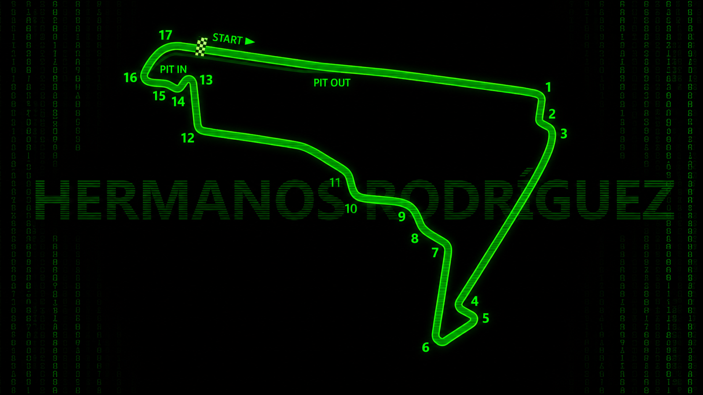

Essa é a equipe que eu torço e sem sombra de dúvidas foi o que mais me incentivou a gostar de automobilismo.
Sendo uma equipe incrível trouxe aqui uma página dedicada a ela
A equipe mais dominante da era híbrida da Fórmula 1.
Explorar ↓
A Mercedes-Benz estreou na Fórmula 1 no Grande Prêmio da França de 1954 com o revolucionário W196. Juan Manuel Fangio, um dos maiores de todos os tempos, pilotou o carro na estreia e foi campeão naquele ano e no seguinte, antes de a equipe se retirar do esporte.
A Daimler AG adquiriu a Brawn GP — campeã de construtores e pilotos em 2009 — e renomeou a equipe para Mercedes GP. A parceria com a Petronas e a chegada de Nico Rosberg e Michael Schumacher marcaram o início de uma nova era.
Com a introdução dos motores V6 turbo híbridos em 2014, a Mercedes tornou-se a força dominante da Fórmula 1. Oito títulos consecutivos de construtores e Lewis Hamilton como o piloto mais vitorioso da história do esporte definem esse período único.
Após o domínio absoluto, a equipe enfrentou desafios com as mudanças de regulamento em 2022. Em 2025, com George Russell como líder e o estreante Kimi Antonelli, a Mercedes terminou em segundo no campeonato de construtores, mostrando sinais consistentes de recuperação.


